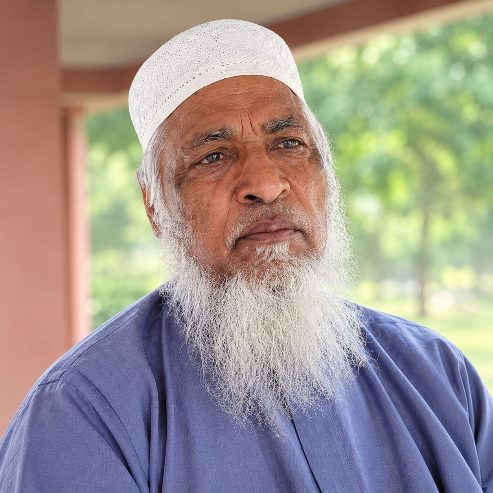

প্রতিষ্ঠার প্রেক্ষাপট
চট্টগ্রাম সিটি কর্পোরেশনের চান্দগাঁও থানাধীন ৫নং মোহরা ওয়ার্ডে অবস্থিত ইস্পাহানি দাখিল মাদ্রাসা অত্র এলাকার দ্বীনি ও আধুনিক শিক্ষার এক অনন্য মারকাজ। উপমহাদেশের প্রখ্যাত শিল্প পরিবার ইস্পাহানি শিল্পগোষ্ঠীর সাবেক চেয়ারম্যান ও বিদ্যানুরাগী ব্যক্তিত্ব মরহুম জনাব মির্জা আহমেদ ইস্পাহানি সাহেবের সুদূরপ্রসারী চিন্তার ফসল হিসেবে এই শিক্ষা প্রতিষ্ঠানটি যাত্রা শুরু করে।
১৯৭০ সালের দিকে যখন অত্র অঞ্চলে মানসম্মত দ্বীনি শিক্ষার তীব্র অভাব ছিল, তখন ইস্পাহানি শিল্পগোষ্ঠীর কর্মকর্তা-কর্মচারীদের সন্তান এবং স্থানীয় পিছিয়ে পড়া জনগোষ্ঠীর নৈতিক ও বৈষয়িক শিক্ষার চাহিদা পূরণের লক্ষ্যে এই মাদ্রাসাটি প্রতিষ্ঠা করা হয়। ক্ষুদ্র পরিসরে যাত্রা শুরু করলেও আজ এটি একটি পূর্ণাঙ্গ দাখিল মাদ্রাসা হিসেবে শিক্ষা অঙ্গনে গৌরব উজ্জ্বল স্থান দখল করে নিয়েছে।
৮০০+
শিক্ষার্থী
২৫ জন
দক্ষ শিক্ষক
১০০%
সাফল্যের হার
বর্তমান অবস্থা ও শিক্ষা ব্যবস্থা
বর্তমানে মাদ্রাসাটি বাংলাদেশ মাদ্রাসা শিক্ষা বোর্ড কর্তৃক এম্পিও (MPO) ভুক্ত এবং ইস্পাহানি গ্রুপের প্রত্যক্ষ তত্ত্বাবধানে অত্যন্ত সুনামের সাথে পরিচালিত হচ্ছে। মাদ্রাসার বর্তমান সুপারিনটেনডেন্ট মাওলানা মোহাম্মদ আব্দুল হামিদ সাহেবের যোগ্য নেতৃত্বে বর্তমানে ২৫ জন অভিজ্ঞ শিক্ষক মণ্ডলী পাঠদান করছেন। মাদ্রাসায় বর্তমানে প্রায় ৮০০ জন শিক্ষার্থী অধ্যয়নরত আছে।
আমরা শিক্ষার্থীদের একাডেমিক পড়াশোনার পাশাপাশি নৈতিক চরিত্র গঠন এবং কারিগরি জ্ঞান প্রদানে বিশ্বাসী। বর্তমানে আমাদের মাদ্রাসায় বিজ্ঞান ও ব্যবসায় শিক্ষা শাখা না থাকলেও, সাধারণ (General) বিভাগে আমরা সর্বোচ্চ মান বজায় রাখি। আমাদের শিক্ষার্থীরা নিয়মিতভাবে দাখিল পরীক্ষায় জিপিএ-৫ সহ চমৎকার ফলাফল অর্জন করে রাষ্ট্রের গুরুত্বপূর্ণ স্তরে অবদান রাখছে।
আধুনিকায়ন ও ভবিষ্যৎ পরিকল্পনা
ইস্পাহানি শিল্পগোষ্ঠীর বর্তমান চেয়ারম্যান ও মাদ্রাসা পরিচালনা কমিটির সম্মানিত সভাপতি জনাব মির্জা সালমান ইস্পাহানি সাহেবের বদান্যতায় মাদ্রাসার অবকাঠামো ও প্রযুক্তিগত প্রভূত উন্নয়ন সাধিত হয়েছে। মাদ্রাসার আধুনিক বহুতল ভবন এবং ডিজিটাল ক্লাসরুম স্থাপনের মাধ্যমে এটি এখন চট্টগ্রামের অন্যতম দৃষ্টিনন্দন ও আধুনিক শিক্ষা প্রতিষ্ঠানে রূপান্তরিত হতে যাচ্ছে। শিক্ষার্থীদের ক্রমবর্ধমান চাপের মধ্যেও শিক্ষার মান বজায় রাখতে আমরা সদা সচেষ্ট।

মরহুম আলহাজ্ব মাওলানা মোহাম্মদ আব্দুর রাজ্জাক
প্রতিষ্ঠাতা ও সাবেক সুপারিনটেনডেন্ট
"জ্ঞানের প্রসারের মাধ্যমেই একটি সুন্দর সমাজ গঠন সম্ভব।"